Multi Layer perceptron (MLP) is a feedforward neural network with one or more layers between input and output layer. Feedforward means that data flows in one direction from input to output layer (forward). This type of network is trained with the backpropagation learning algorithm. MLPs are widely used for pattern classification, recognition, prediction and approximation. Multi Layer Perceptron can solve problems which are not linearly separable.
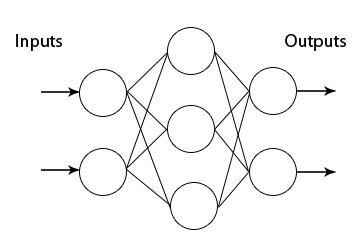
To create and train Multi Layer Perceptron neural network with easyNeurons do the following:
Step 1. To create Multi Layer Perceptron network, in main menu click Networks > Multi Layer Perceptron.
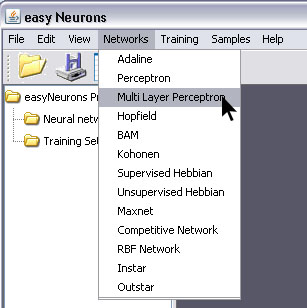
Step 2. Enter number of neurons in each layer separated with white space (2 3 1), choose transfer function Tanh from drop down menu, and click Create button.
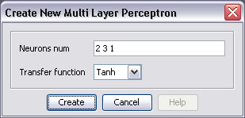
This will create the Multi Layer Perceptron neural network with two neurons in input, three in hidden and one in output layer. All neurons will have Tanh transfer functions.
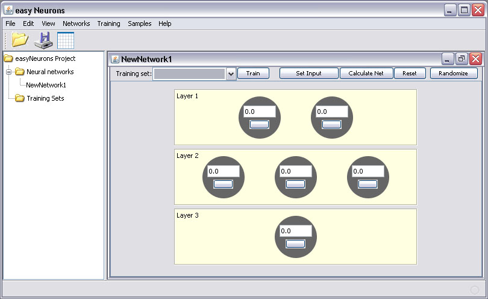
Now we shall train this network to learn logical XOR function. We'll create new training set according to XOR truth table.
Step 3. In main menu click Training > New Training Set to open training set wizard.
Enter training set name, choose Supervised for training set type from drop down list, enter number of inputs and outputs as shown on picture below and click Next button.
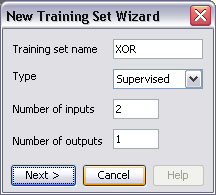
Then create training set by entering training elements as input and desired output values for neurons in input and output layer respectively. Use Add row button to add new elements, and click OK button when finished.
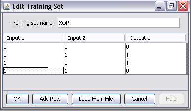
Step 4. To start network training procedure, in network window select XOR training set from the drop down list, and click Train button.
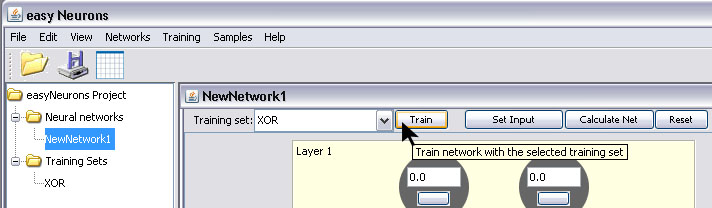
In Set Learning parameters dialog use default learning parameters, and just click the Train button.
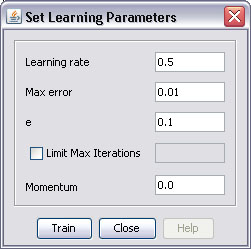
Training stopped after 816 iterations with total net error under 0.01
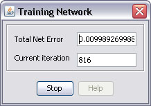
Step 5. After the training is complete, you can test network by using Set Input button.
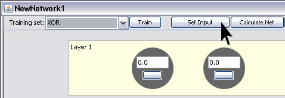
This opens Set Network Input dialog in which you can enter input values for network separated with white space.
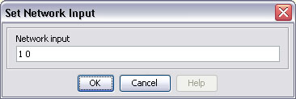
The result of network test is shown on picture below.
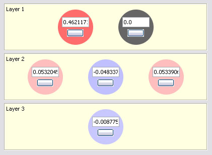
Value of output neuron is very close to zero, which is the desired output for the given input. The small difference represents the acceptable error.
Graph view of this network is shown on picture below.
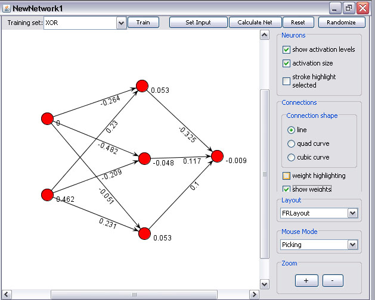
package org.neuroph.samples;
import org.neuroph.core.NeuralNetwork;
import org.neuroph.nnet.MultiLayerPerceptron;
import org.neuroph.core.learning.TrainingSet;
import org.neuroph.core.learning.TrainingElement;
import org.neuroph.core.learning.SupervisedTrainingElement;
import java.util.Vector;
import org.neuroph.util.TransferFunctionType;
/**
* This sample shows how to create, train, save and load simple Multi Layer Perceptron
*/
public class XorMultiLayerPerceptronSample {
public static void main(String[] args) {
// create training set (logical XOR function)
TrainingSet trainingSet = new TrainingSet();
trainingSet.addElement(new SupervisedTrainingElement(new double[]{0, 0}, new double[]{0}));
trainingSet.addElement(new SupervisedTrainingElement(new double[]{0, 1}, new double[]{1}));
trainingSet.addElement(new SupervisedTrainingElement(new double[]{1, 0}, new double[]{1}));
trainingSet.addElement(new SupervisedTrainingElement(new double[]{1, 1}, new double[]{0}));// create multi layer perceptron
MultiLayerPerceptron myMlPerceptron = new MultiLayerPerceptron(TransferFunctionType.TANH, 2, 3, 1);
// learn the training set
myMlPerceptron.learnInSameThread(trainingSet);// test perceptron
System.out.println("Testing trained neural network");
testNeuralNetwork(myMlPerceptron, trainingSet);// save trained neural network
myMlPerceptron.save("myMlPerceptron.nnet");// load saved neural network
NeuralNetwork loadedMlPerceptron = NeuralNetwork.load("myMlPerceptron.nnet");// test loaded neural network
System.out.println("Testing loaded neural network");
testNeuralNetwork(loadedMlPerceptron, trainingSet);}
public static void testNeuralNetwork(NeuralNetwork nnet, TrainingSet tset) {
for(TrainingElement trainingElement : tset.trainingElements()) {
nnet.setInput(trainingElement.getInput());
nnet.calculate();
Vector<Double> networkOutput = nnet.getOutput();
System.out.print("Input: " + trainingElement.getInput());
System.out.println(" Output: " + networkOutput);}
}
}
To learn more about the Multi Layer Perceptrons and Backpropagation (learning rule for Multi Layer Perceptron) see:
http://www.learnartificialneuralnetworks.com/backpropagation.html
http://en.wikipedia.org/wiki/Multilayer_perceptron
http://en.wikipedia.org/wiki/Backpropagation